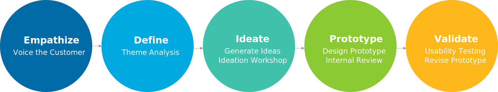
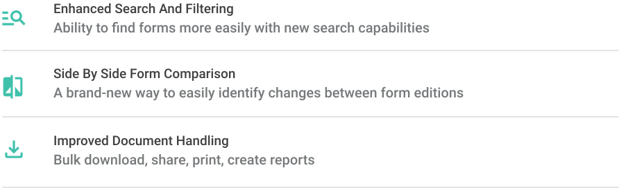
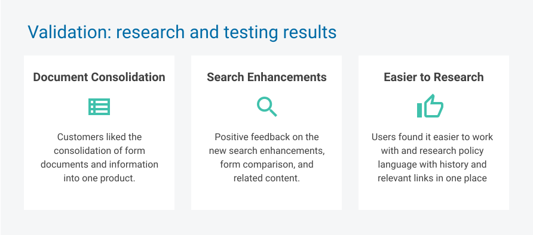
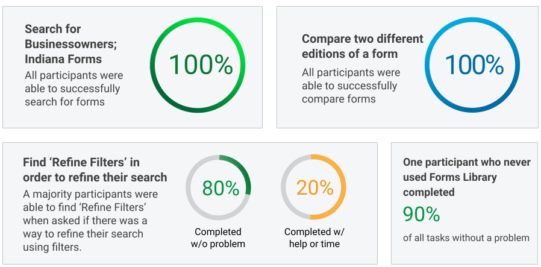
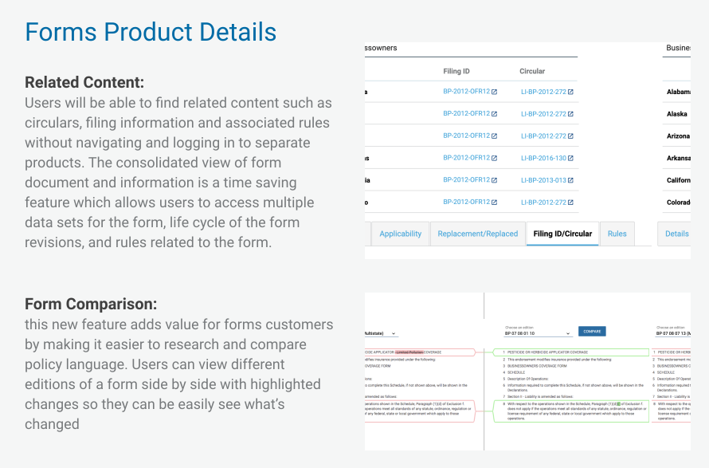

Verisk
Forms Library
Password: verisk1
My Role | UX Designer & User Researcher
Tools | Axure, Sketch
Research Methods | Surveys, Interviews, Usability Testing
Date | 2021

Problem Statement:
There is no way to compare two editions of a form. Users must go to three different products (Forms Library, FIRST, and EFD products) to access documents, information, and related content.
Our Solution:
The Forms Library redesign will provide consolidated access to ISO's 30,000+ forms documents, information, and related content in one product.

Providing tools to make better informed business decisions


"The ability to search, select things and get to your results is much more powerful than what I can do today... and get more information (about the form) in one place."
-Tyronne S. Amtrust
Usability Testing - A study with 20 participants
Users Searched: Businessowners; Indiana; Forms - that had to do with pollution*

"Not having to go to two different tools to get what I want is great!"
-Deb B. West Bend
